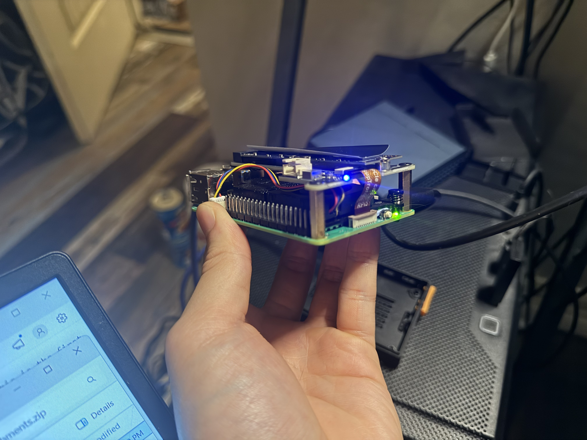

Personal Homelab
A homelab using a Raspberry Pi 5 to create a personal network for learning and testing.

Motivation
I created this project with education and hands on experience in mind. The idea of a homelab was always fascinating to me, so I wanted to take a shot at it myself. My goal was to create my own personal network to better understand networking and to replace online subscriptions with my own services.
Hardware
- Raspberry Pi 4gb
- X1001 Geekworm PCIe to M.2 NVMe Shield
- inland 500gb NVMe SSD
- CAT6 RJ45 ethernet cables
- 1TB 2.5 SATA Hard Drive
- 5 port tp-link network switch
Software
- Raspberry Pi imager
- Samba
- Docker
- Plex
Implementation
The first thing that I had to do was assemble the hardware. I took the active cooler and M.2 hat and screwed them onto the Raspberry Pi. These two components are used to either cool the Pi or allow an NVMe M.2 SDD to be slotted internally to the Pi. Afterward, the next step was to format the drives and install the Operating System for the Pi. I used some insignia converters to plug the inland M.2 SDD and SATA hard drive into my comptuer. Once plugged in, I formatted the drives in ext4 so they could be easier to use for services like plex. The inland NVMe M.2 drive would serve as my main drive and the hard drive would be used as external storage. After the drives were formatted, I proceeded to install the OS using the Raspberry Pi Imager onto the SSD and put it into the hat. I booted it up and configured it to allow Secure Socket and Remote Desktop Proctol between it and my computer.